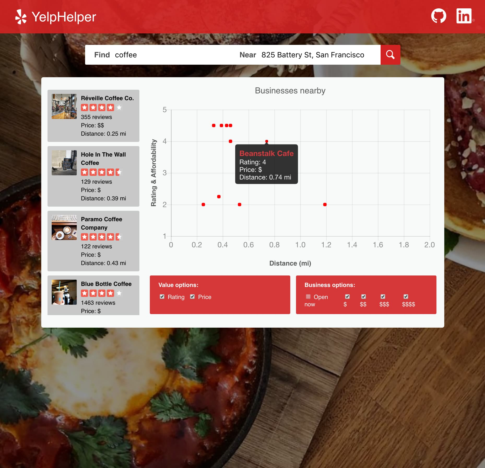

Earlier project: Yelp-Helper
Data visualization tool for making faster decisions || JavaScript, Express, Node, Yelp Fusion, Chart.js
Full-stack software engineer: Ruby on Rails, React, TypeScript.
7+ years building insurance quoting and API integration platforms, most recently at Brown & Brown.
Problems I've solved on a commercial insurance quoting platform serving agents and consumers across ~20 carrier/product integrations. Details are generalized because the systems are internal.
Extended an in-house integration framework with a snippet interpreter that parses carrier XML/JSON responses into structured quote details through configuration, avoiding ~383 separate parsing methods across ~20 integrations.
Tech: Ruby on Rails, XML/JSON, API integration
Authored a design proposal to restructure a 20M+ row configuration table that grew by 1M+ rows per new carrier/product, to cut the hundreds of thousands of writes needed to onboard a new market.
Tech: MySQL, Rails, technical design
Owned a major part of a proprietary React component library used across ~20 branding variants, and later extended it with a progress bar, multiselect and a navigation sidebar.
Tech: React, Redux, NPM, Yarn
Removed a legacy UI library dependency and led data migration for a legacy application sunset, consolidating apps to cut maintenance and speed up whitelabel work.
Tech: Rails, React, data migration
Built a staged carrier request pipeline with error handling and sensitive-data redaction, monthly SFTP reporting with Sentry alerting, and bond-package PDF generation for 40+ states.
Tech: Rails, AWS S3, SFTP, Sentry
Built a question-redundancy detector over ~5,500 questions and a tool translating carrier-specific business-type tables into carrier-agnostic tables, and use GitHub Copilot in day-to-day engineering workflows and code review.
Tech: Ruby, CSV tooling, GitHub Copilot
My day-to-day stack, plus earlier experience with Vue, Go and Node.

Data visualization tool for making faster decisions || JavaScript, Express, Node, Yelp Fusion, Chart.js
I'm open to senior full-stack and platform-oriented engineering roles where hands-on execution and technical ownership both matter. Feel free to reach out!